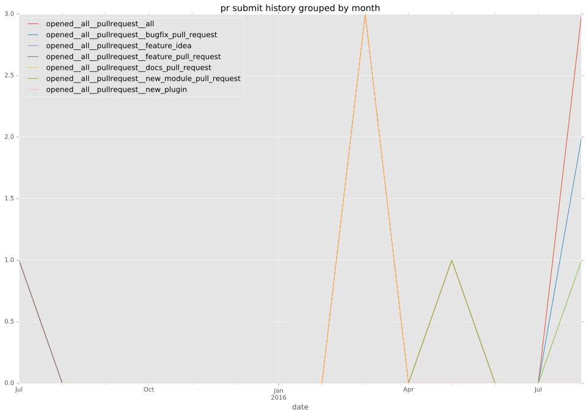

authors
- keitwb
- chouseknecht
maintainers
contributors
- chouseknecht : 20 commits
- gundalow : 1 commits
total issue counts
pullrequest: 8
docs pull request: 3
bugfix pull request: 2
issue: 3
new plugin: 3
bug report: 3
issue history
pullrequest history

days open by issue type
all
count: 15
std: 26.1552143577
min: 0
max: 80
median: 0.0
mean: 10.3333333333
pullrequest
count: 0
std: nan
min: nan
max: nan
median: nan
mean: nan
docs pull request
count: 6
std: 1.54919333848
min: 0
max: 3
median: 0.0
mean: 1.0
bugfix pull request
count: 4
std: 0.0
min: 0
max: 0
median: 0.0
mean: 0.0
issue
count: 0
std: nan
min: nan
max: nan
median: nan
mean: nan
new plugin
count: 4
std: 43.2463871323
min: 0
max: 80
median: 34.5
mean: 37.25
bug report
count: 1
std: nan
min: 0
max: 0
median: 0.0
mean: 0.0
closures grouped by total days open